This quickstart will guide you through the steps to use the Informatica Intelligent Cloud Services Accelerator for Snowflake to create an Informatica Intelligent Data Management Cloud (IDMC) organization, which provides free data processing of up to one billion records per month. You will then learn how to build a data integration mapping and mapping task or data pipeline using Informatica's Data Integration.
The Informatica IDMC provides complete, comprehensive cloud-native and AI-powered data management capabilities, including data catalog, data integration, API and application integration, data prep, data quality, master data management, and a data marketplace, on a foundation of governance and privacy. Informatica IDMC is powered by our AI and machine learning (ML) engine, CLAIRE, optimized for intelligence and automation, and is built on a modern, elastic, serverless microservices stack that connects data consumers to the data sources they need. It enables you to intelligently discover and understand all the data within and outside the enterprise, access and ingest all types of data wherever and whenever you want, curate and prepare data in a self-service fashion so that it is fit for use, and deliver an authoritative and trusted single view of all your data. Informatica IDMC is the single and most complete platform you will ever need for cloud-native data management.
IDMC Data Integration allows you to load source data from databases, applications, and data files in the cloud or on-premises into Snowflake. Data Integration supports many transformations that can be used to transform and enrich the source data. In addition, pushdown optimization (PDO) can be utilized for some transformations and functions to take advantage of Snowflake compute resources for data processing.
In this lab, you will create a mapping to read two delimited files (loyalty and mobile traffic) from S3, join the files, perform an aggregation to create a count and total, and write the results into a new table in Snowflake. Then in the mapping task, you will turn on pushdown optimization to enable the processing to occur in Snowflake.
JSON (JavaScript Object Notation) is a text-based data format commonly used between servers and web applications and web-connected devices. Because it is text-based, it is readable by both humans and machines. JSON semi-structured data can be stored in Snowflake variant column alongside relational data. In IDMC, the hierarchy parser transformation parses and transforms hierarchy data to relational data.
In this lab, you will also use additinal traffic informations data to create a hierarchical schema, then use it in a mapping to parse and transform the JSON weather forecast data, join them, add an expression to convert the temperature, and then write the data to a new table.
Prerequisites
- Familiarity with Snowflake
- Familiarity with data integration (ETL) concepts
- Familiarity with AWS S3
- Familiarity with hiearchical data
What You'll Learn
By the end of this guide, you'll learn:
- How to create an IDMC organization from Snowflake Partner Connect
- How to view the Snowflake connection configuration in IDMC
- How to configure an S3 connection.
- How to build a data integration mapping to read S3 files and load into Snowflake.
- How to turn on Pushdown Optimization (PDO) or ELT in a mapping task to use Snowflake's warehouse to process the data integration mapping.
- How to verify PDO is successfully enabled.
- How to configure a hierarchical schema
- How to build a data integration mapping to flatten JSON data into relational data
- All of the above without writing a single line of code.
What You'll Need
- A Snowflake account with access to the ACCOUNTADMIN role
- An email address for IDMC registration
- Configured Snowflake connection in IDMC org if your org will not be registered from Partner Connect. Documentation on how to create a Snowflake connection
- AWS S3 bucket access and credential
What You'll Build
- An Informatica Data Management Cloud organization
- An S3 connection
- A data integration mapping to load S3 files into Snowflake
- A mapping task to use PDO for processing the data integration mapping
- A hierarchical schema
- A data integration mapping to parse JSON weather data and flatten it.

If you already have an Informatica Data Management Cloud (IDMC) account make sure to log off and close the browser.
If you haven't already, register for a Snowflake free 30-day trial, right click to open in new tab avoiding to change current lab page. You can also use an existing Snowflake account as long as you have ACCOUNTADMIN access in that account.
Please select a region which is physically closest to you, and select the Enterprise edition (that is the default choice) so you can leverage some advanced capabilities that are not available in the Standard Edition.
After registering, you will receive an email with an activation link and your Snowflake account URL. Bookmark this URL for easy, future access. After activation, you will create a user name and password. Write down these credentials.
Resize your browser window, so that you can view this guide and your web browser side-by-side and follow the lab instructions. If possible, use a secondary display dedicated to the lab guide.
Step 1
- Login to Snowflake Snowsight.
- Switch role to ACCOUNTADMIN.
- Click Admin > Partner Connect.
- Search for Informatica.
- Click Informatica tile.
- Be sure to select Informatica and NOT Informatica Data Loader (this allows ingest data with a wizard-based approach without transformations)

Step 2
- Note the objects that will be created in Snowflake.
- Click Connect.

Step 3
- Click Activate.

Step 4
- Fill in the Informatica registration form.
- Uncheck Use my email address as my username box (this will prenvent account failure creation if you already have an IDMC account)
- Select Europe for your Data Center.
- Click Submit.

- Upon successful registration, you will receive an email with the subject line: Thanks for signing up for the Informatica Intelligent Cloud Services Accelerator for Snowflake.

Step 5
- Please read through Knowledge Base materials and demo recording for more information.
- From below page, click the region you selected in step 4 to go to the Login page. 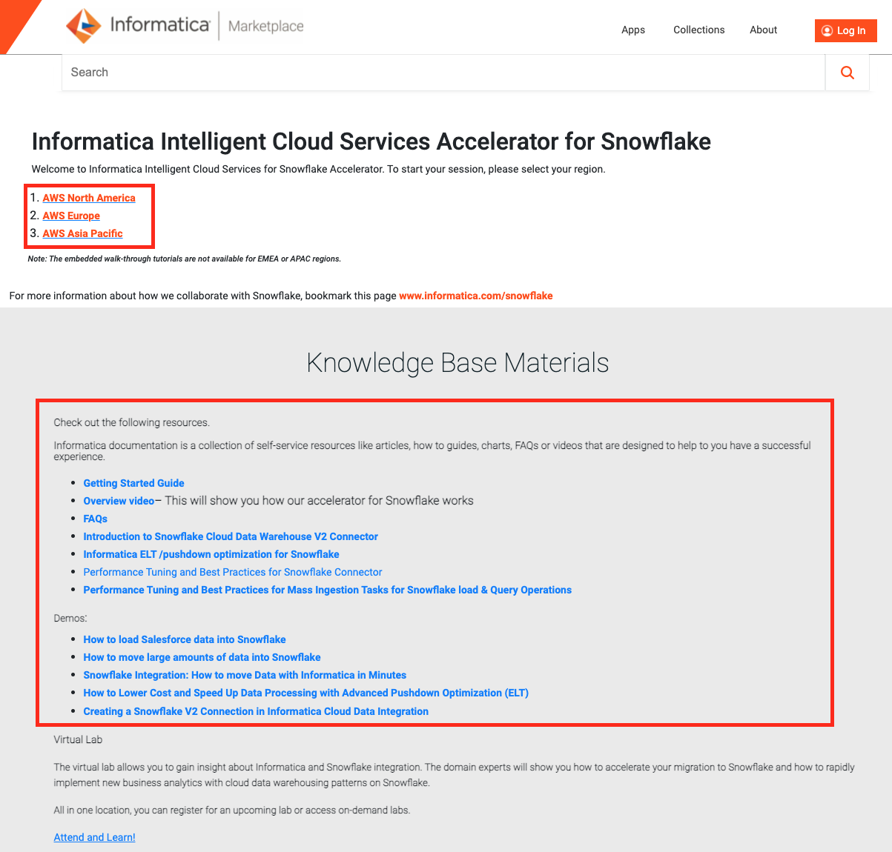
Step 6
- Enter your username and password.
- Click Log In.

Step 7
- The first time logging in, you will be prompted to enter a security question and answer. Fill them in.
- Click Log In.

- The Sample Use-Cases walkthrough page shows up. Click "Don't show this again".

- To re-visit the Sample Use-Cases walkthrough page, click ? at the top right and choose Walkthroughs. Feel free to go through the sample use-cases walkthrough at your convenience.

- In the next section, we will look at the Snowflake connection that was created by the registration process.
The Snowflake connection is automatically configured in the IDMC organization when you create the organization through Snowflake Partner Connect. Let's take a look at the connection.
Step 1
- Click Administrator in the service selector page.

- Click Connections on the left panel.

- Click the Snowflake connection that was created by the registration process. Your connection name will have Snowflake followed by your Snowflake account name.
- Following is a screenshot of a Snowflake connection. Note the properties i.e. Snowflake objects under the Connection Section.

- Click Test Connection button and you should see a successful test notification.
- In the next section, we will review the Snowflake objects that were created by Partner Connect.
As described in Step 2 of Create IDMC Organization section, a set of Snowflake objects were created. Those objects are Database, Warehouse, System User, and System Role.
Let's take a look at those objects.
Step 1
- Go to Worksheets in Snowflake, create a new worksheet and perform the following queries.
 Note : You will have several SQL statements in the worksheet, position your cursor on the query to execute.
Note : You will have several SQL statements in the worksheet, position your cursor on the query to execute.
Step 2
- Run the following query to show the database object.
show databases like 'PC_INF%';

- Run the following query to show the warehouse object.
show warehouses like 'PC_INF%';

- Run the following query to show the user object.
show users like 'PC_INF%';

- Run the following query to show the role object.
show roles like 'PC_INF%';
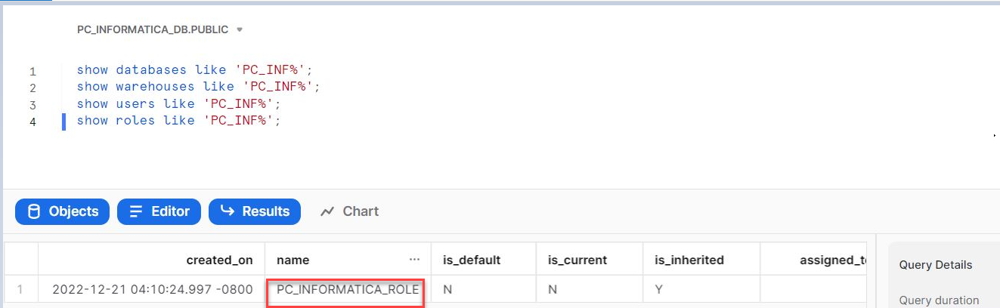
- Now we're ready to start building our data integration pipeline.
An AWS S3 connection is required to access and read an AWS S3 bucket. Follow configuration steps below to create the S3 connection.
Note that the S3 connection requires that the S3 objects be encrypted. If you are doing this lab live, you will be given an Access Key and Secret Key to use. Alternatively, you can download the files at the end of this page and load them to your own S3 bucket.
Step 1
- Click Connections on the left panel.
- Click New Connection button to create a new connection.

Step 2
- Enter S3 in the Connection Name field.
- Select Amazon S3 v2 from the Type dropdown field.
- Select Informatica Cloud Hosted Agent from the Runtime Environment dropdown field.
- Enter your access key in the Access Key field.
- Enter your secret key in the Secret Key field.
- Enter S3 bucket name dataforingestion-eu in the Folder Path field.
- Select your bucket's region from the Region Name dropdown field.
- Click Test Connection button. If the configuration is correct, the page should display The test for this connection was successful.
- Click Save button.
 Reference: AWS S3 V2 Connector Documentation
Reference: AWS S3 V2 Connector Documentation - You should have an AWS S3 and Snowflake connections configured.

Step 3 (Alternative method for using your own S3 bucket)
- Click to download the following files.
telco_info.csv loyalty_customers.csv additional_telco_info.json - This action is optional and not needed for this lab. The only purpose is if you want to use the files using own bucket later.
Step 1
- Click the Service Selector at the top left, then select Data Integration service. 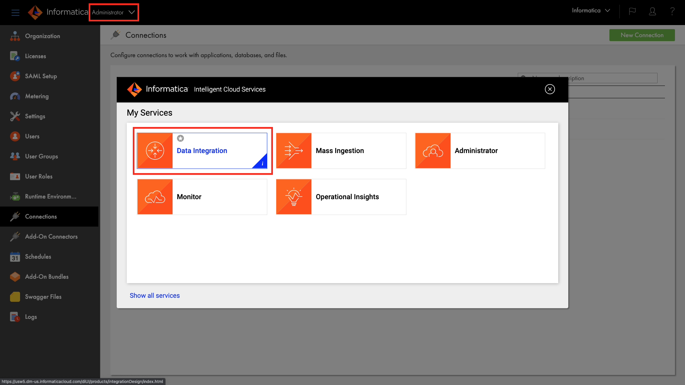
Step 2
Let's create a project to store our mapping or assets.
- Click Explore on the left panel.
- Click New Project to create a new project.

- Enter Hands-on Lab in the Name field.
- Click Save.

- Click Hands-on Lab project.

IDMC Data Integration allows you to load source data from databases, applications, and data files in the cloud or on-premises into Snowflake. Data Integration supports many transformations that can be used to transform and enrich the source data. In addition, pushdown optimization (PDO) can be utilized for some transformations and functions to take advantage of Snowflake compute resources for data processing.
In this lab, you will create a mapping to read two delimited files (loyalty_customer and telco_info) from S3, join the files, perform an aggregation to create a count and total, and write the results into a new table in Snowflake. Then in the mapping task, you will turn on pushdown optimization to enable the processing to occur in Snowflake.
Step 1
Create a new mapping
- Click New...
- Click Mappings
- Select Mapping
- Click Create

- Under properties, enter m_S3_into_Snowflake_pushdown in Name field.
- Ensure that Location is Hands-on Lab. If not, click Browse and select it.

Step 2
Let's configure customers loyalty data source from S3.
- Click the Source transform in the mapping canvas to assign its properties.
- In the General tab, enter src_S3_Customers_Loyalty in the Name field.

- In the Source tab, select S3 in the Connection dropdown field.
- Click Select to select a source file. 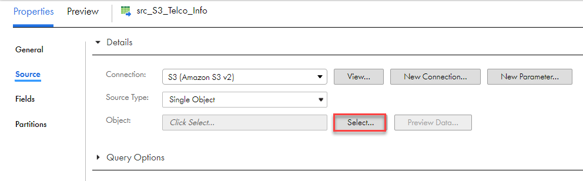
- Click on dataforingestion-eu S3 bucket.
- From the results on the right, select loyalty_customers.csv file.
- Click OK.
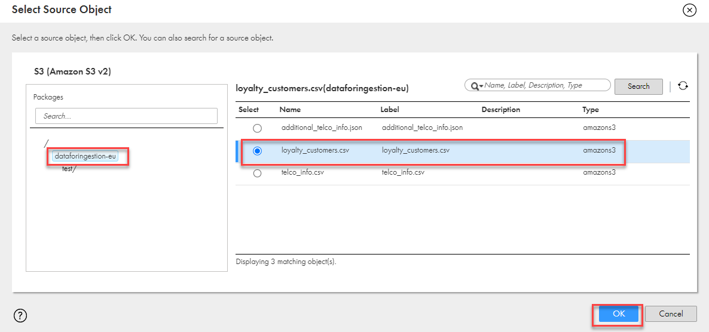 - Click Format dropdown field and select Flat.
- Click Formatting Options.

- Enter a semicolon character in the delimiter field, remove double-quote for the Qualifier.

- Click Data Preview to view the first 10 records.
- Records should be separated by fields.

- Click OK.
- Click Save to save work in progress.
Step 3
Now we will add the Lineitem file as another data source. The steps are the same as the above Orders data source.
- From the transformation palette, drag Source transform and drop in the mapping canvas.

- Let's assign its properties.
- In the General tab, enter src_S3_Telco_Info in the Name field.
- In the Source tab, select S3 in the Connection dropdown field.
- Click Select to select a source file.
- Click on dataforingestion-eu S3 bucket.
- From the results on the right, select telco_info.csv file.
- Click OK.
- Click Format dropdown field and select Flat.
- Click Formatting Options.
- Enter a semicolon character in the delimiter field, remove double-quote for the Qualifier.
- Click Data Preview to view the first 10 records.
- Records should be separated by fields.
- Click OK.
- Click Save to save work in progress.
Step 4
Let's join the two data sources.
- From the transformation palette, drag the Joiner transform and drop it over the line between the src_S3_Customers_Loyalty source and target transforms. The Joiner should now be linked to the Orders and target. If not, manually link them.
- Click align icon to align transformations in the mapping canvas.

- Click the plus icon above the Joiner to expand.
- Link src_S3_Telco_Info to the Detail of Joiner transform.

- Let's assign the Joiner properties.
- In the General tab, enter jnr_sources in the Name field.
- In the Join Condition tab, click the plus icon to add a new condition.
- Select PHONE_NUMBER for Master and MSISDN for Detail.

- Click Save to save work in progress.
Step 5
Let's add an expession transformation and add an new port.
- From the transformation palette, drag the Expression transform and drop it over the line between the jnr_sources source target transforms.
- Click align icon to align transformations in the mapping canvas.

- In the General tab, enter exp_add_port in the Name field. 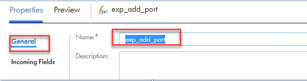
- Go to expression under General and click + icon on right to add Output Field
- Add the following field:
o_grpby
- Click Configure and enter the following in the Expression field. 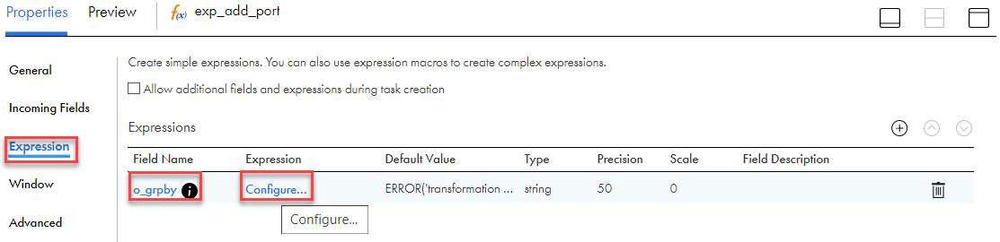
SUBSTR(EVENT_DATE,1,10)
- Click OK
 .
. - Click Save to save work in progress.
Step 6
Now we will count the number of event types per day per phone number.
- From the transformation palette, select Aggregator transformation, drag and drop between the exp_add_port and Target in mapping canvas window.
- Click align icon to align transformations in the mapping canvas.

- Let's assign the properties.
- In the General tab, enter agg_by_date in the Name field.
- In the Group By tab, click the plus icon to add new fields.
- Add the following fields:
o_grpby
PHONE_NUMBER - When completed, the Group By tab properties should look like this: 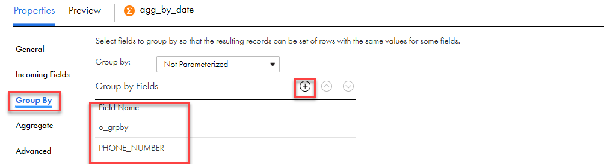
- In the Aggregate tab, click the plus icon to add a new field.
- Enter o_count in the Name field.
- Select integer in the Type dropdown field.
- Enter 10 in the Precision field.
- Enter 0 in the Scale field.
- Click OK.
- Click Configure to configure the expression.
- Enter count(EVENT_DTTM) in the Expression field. This function will count the number of event types per day per number.
- Enter the following in the Expression field.
count(EVENT_DTTM)
- Click Validate.
- Click OK.
- When completed, your Expression tab properties should look like this:

- Click Save to save work in progress.
Step 7
Lastly the target table is going to be in Snowflake.
- Click Target to set a target properties.
- In the General tab, enter tgt_Snowflake in the Name field.
- In the Incoming Fields tab, select Named Fields

- Select below fields :
o_count
o_grpby
PHONE_NUMBER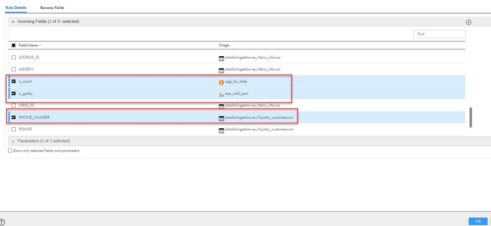 - Go to Rename Fields tab and rename fields as below
Rename o_count as C_TOTAL
Rename o_grpby as C_DATE
- Click OK
- When completed, the Incoming Fields tab should look like this:

- In the target tab, select snowflake connection and click Select to select target table.

- Select Create New at Runtime for Target Object.
- Enter T_TELCO_AGG in Object Name field.
- Enter TABLE in the TableType field.
- Enter PC_INFORMATICA_DB/PUBLIC in Path field.

- The Target Fields tab should look like this:

- The Field Mapping tab should look like this: 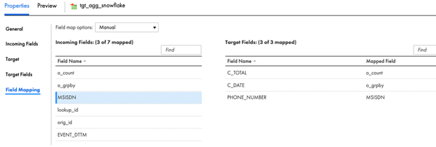
- Run the mapping by selecting your mapping and click run button on top right

- Click My Jobs to monitor the job execution.

- The monitor tab should look like this :

Let's configure Pushdown Optimization (PDO) in the Mapping Task and execute it.
Step 1
- Click Save to save and validate the mapping.
- Click 3 dots icon to create a Mapping task from the mapping

- Select New Mapping Task

- In the New mapping task window, enter mct_S3_into_Snowflake_pushdown in the Name field.
- Select Hands-on Lab for Location.
- Select Informatica Cloud Hosted Agent for Runtime Environment.
- Click Next.

- Scroll down to the Pushdown Optimization section.
- Select Full from the Pushdown Optimization dropdown list.
- Click Finish.

- Click Run to execute the mapping task.

Step 2
View job execution progress.
- Click My Jobs to monitor the job execution.

- Click Refresh icon when the Updates available message appears.
- When the job is completed, make sure Status is Success.

- Drill down to the completed job by clicking the instance name. Then click Download Session Log to view the log.

- In the log you will see a message indicating that Pushdown Optimization is successfully enabled.

- You will also see an INSERT SQL statement that Informatica generated for execution in Snowflake.
INSERT INTO "PC_INFORMATICA_DB"."PUBLIC"."T_TELCO_AGG"("C_TOTAL","C_DATE","PHONE_NUMBER") SELECT t5.t5c4::NUMBER(18,0), t5.t5c3, t5.PHONE_NUMBER FROM ( SELECT T_T3.PHONE_NUMBER, SUBSTR(T_T1.EVENT_DATE, 1, 10)::VARCHAR(10), T_T3.PHONE_NUMBER as c0, SUBSTR(T_T1.EVENT_DATE, 1, 10)::VARCHAR(10) as c1, COUNT(T_T1.EVENT_DTTM)::NUMBER(10,0) FROM ( SELECT T_T0."LOOKUP_ID"::VARCHAR(256), T_T0."HOME_NETWORK_TAP_CODE"::VARCHAR(256), T_T0."SERVING_NETWORK_TAP_CODE"::VARCHAR(256), T_T0."IMSI_PREFIX"::VARCHAR(256), T_T0."IMEI_PREFIX"::VARCHAR(256), T_T0."HOME_NETWORK_NAME"::VARCHAR(256), T_T0."HOME_NETWORK_COUNTRY"::VARCHAR(256), T_T0."BID_SERVING_NETWORK"::VARCHAR(256), T_T0."BID_DESCRIPTION"::VARCHAR(256), T_T0."SERVICE_CATEGORY"::VARCHAR(256), T_T0."CALL_EVENT_DESCRIPTION"::VARCHAR(256), T_T0."ORIG_ID"::VARCHAR(256), T_T0."EVENT_DATE"::VARCHAR(256), T_T0."IMSI_SUFFIX"::VARCHAR(256), T_T0."IMEI_SUFFIX"::VARCHAR(256), T_T0."LOCATION_AREA_CODE"::VARCHAR(256), T_T0."CELL_ID"::VARCHAR(256), T_T0."CHARGED_UNITS"::VARCHAR(256), T_T0."MSISDN"::VARCHAR(256), T_T0."EVENT_DTTM"::VARCHAR(256) FROM "PC_INFORMATICA_DB"."PUBLIC"."T_TELCO_AGG_1672851099992_261294f8-6d21-4275-aba1-cd32e54534da" AS T_T0) AS T_T1(LOOKUP_ID, HOME_NETWORK_TAP_CODE, SERVING_NETWORK_TAP_CODE, IMSI_PREFIX, IMEI_PREFIX, HOME_NETWORK_NAME, HOME_NETWORK_COUNTRY, BID_SERVING_NETWORK, BID_DESCRIPTION, SERVICE_CATEGORY, CALL_EVENT_DESCRIPTION, ORIG_ID, EVENT_DATE, IMSI_SUFFIX, IMEI_SUFFIX, LOCATION_AREA_CODE, CELL_ID, CHARGED_UNITS, MSISDN, EVENT_DTTM) Join ( SELECT T_T2."ID"::VARCHAR(256), T_T2."FIRST_NAME"::VARCHAR(256), T_T2."LAST_NAME"::VARCHAR(256), T_T2."EMAIL"::VARCHAR(256), T_T2."GENDER"::VARCHAR(256), T_T2."STATUS"::VARCHAR(256), T_T2."ADDRESS"::VARCHAR(256), T_T2."PHONE_NUMBER"::VARCHAR(256), T_T2."POINTS"::VARCHAR(256) FROM "PC_INFORMATICA_DB"."PUBLIC"."T_TELCO_AGG_1672851099885_f3e780ff-b0db-423f-98fc-c86871635698" AS T_T2) AS T_T3(ID, FIRST_NAME, LAST_NAME, EMAIL, GENDER, STATUS, ADDRESS, PHONE_NUMBER, POINTS) ON T_T3.PHONE_NUMBER = T_T1.MSISDN GROUP BY 1, 2) AS t5(PHONE_NUMBER, t5c1, PHONE_NUMBER0, t5c3, t5c4) ]
Step 3
- In Snowflake Snowsight, you should see 438485 rows inserted in the T_TELCO_AGG table.

- Click
- You can also view the Informatica-generated INSERT statement that was executed in the Snowflake query history.
- Click Home button

- Go to Activity –> Query History and selecting, select "All" or "PC_INFORMATICA_USER" as user.


Step 1
JSON (JavaScript Object Notation) is a text-based data format commonly used between servers and web applications and web-connected devices. Because it is text-based, it is readable by both humans and machines. JSON semi-structured data can be stored in Snowflake variant column alongside relational data. In IDMC, the hierarchy parser transformation parses and transforms hierarchy data to relational data.
In this section, we'll load some JSON-formatted telco data into the PC_INFORMATICA_DB database. You will then use it to create a hierarchical schema, then use it in a mapping to parse and transform, join them, add an expression to convert the timestamp, then write to a new table.
For this step we will use standard Snowflake SQL commands to create a table with a Snowflake VARIANT column.
- In Snowflake Snowsight, execute all of the following SQL statements.
-- Set the correct ROLE, WAREHOUSE, and SCHEMA
use role PC_INFORMATICA_ROLE;
use warehouse PC_INFORMATICA_WH;
use schema PC_INFORMATICA_DB.PUBLIC;
-- Create the table
create or replace table pc_informatica_db.public.T_VHOL_JSON (
v variant);
copy into T_VHOL_JSON
from s3://snowflake-corp-se-workshop/VHOL_Snowflake_informatica_Telco/additional_telco_info.json
FILE_FORMAT = ( TYPE = JSON);

Step 1
Copy JSON data from the Snowflake table and save it locally in your computer.
- Go to Worksheets, execute the following query:
select * from pc_informatica_db.public.T_VHOL_JSON;
- Click data in column V in the result panel.
- Click Copy icon.

- Save the copied JSON data in a text file locally on your computer and name it additional_data.json.
Step 2
Create a Hierarchical Schema in IDMC.
- In IDMC, go to Data Integration service.
- Click New.
- Click Components.
- Select Hierarchical Schema and click Create.

- Enter hs_vhol_data in the Name field.
- Select Hands-on Lab in the Location field if not already filled in.
- Click Upload. 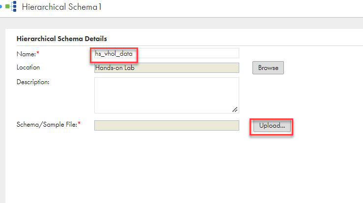
- Click Choose File and select the JSON file you saved in Step 1 above.
- Click Validate and you should see "JSON Sample is Valid" message.
- Click OK.

- Click Save.

Create a mapping to read from the t_vhol_json table, use hierarchy parser to parse the JSON data.
Step 1
- Click New
- Click Mappings.
- Select Mapping.
- Click Create.
- Under properties, enter m_parse_json_data in Name field.
- Ensure Location is Hands-on Lab. If not, click Browse and select it.

Step 2
Let's configure the data source from Snowflake.
- Click Source transform in the mapping canvas to assign its properties.
- In General tab, enter src_vhol_json in the Name field.
- In Source tab, select Snowflake_[account name] in the Connection dropdown field.
- Click Select T_VHOL_JSON to select the source table/object.
- In Select Source Object window, scroll down to find PC_INFORMATICA_DB and click it. Then click PUBLIC schema.
- Select T_VHOL_JSON in the tables list on the right pane.
- Click OK. 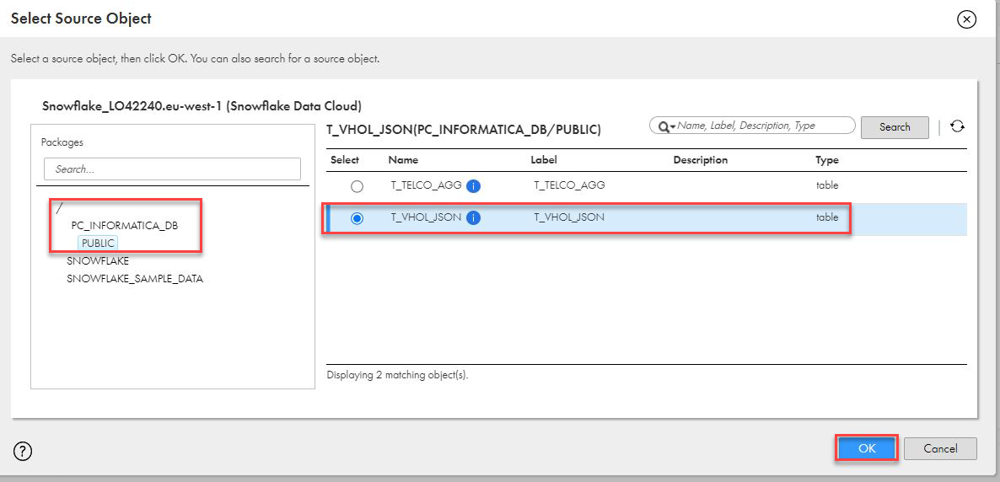
- Click Save to save work in progress.
Step 3
Add HierarchyParser transform and configure it.
- Drag and drop Hierarchy Parser transform on to the canvas.

- In General tab, enter hp_parse_JSON in the Name field.
- In Input Settings tab, click Select and select the hs_vhol_data hierarchical schema. Click OK. 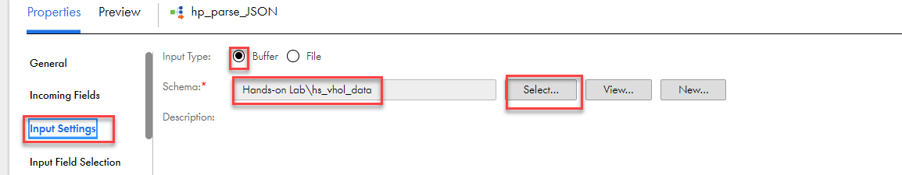
- Select the link from src_vhol_json to Target and click delete icon.
- Link src_vhol_json to hp_parse_JSON.

- Select the hp_parse_JSON transformation, then, in Input Field Selection tab, drag and drop V field from Incoming Fields to Input field in Hierarchical Schema Input Fields

- In Field Mapping tab, expand root element by clicking the triangle icon or expand/contract icon.
- Click rootArray and select Map all descendants

- you should see

- Click Save to save work in progress.
Step 4
Add a Joiner transform to link root and data relational field groups and configure it.
- Drag and drop Joiner transform on the canvas.
- In the General tab, enter jnr_hierarchical_data in the Name field.
- Link hp_parse_JSON to the Master in Joiner transform.
- Select Output Group window appears. Select root and click OK.

- Link hp_parse_JSON again but this time to the Detail in Joiner transform.
- Select data in Output Group and click OK.

- In Join Condition tab, click add icon.
- Select PK_root (bigint) in Master column and FK_root (bigint) in the Detail. 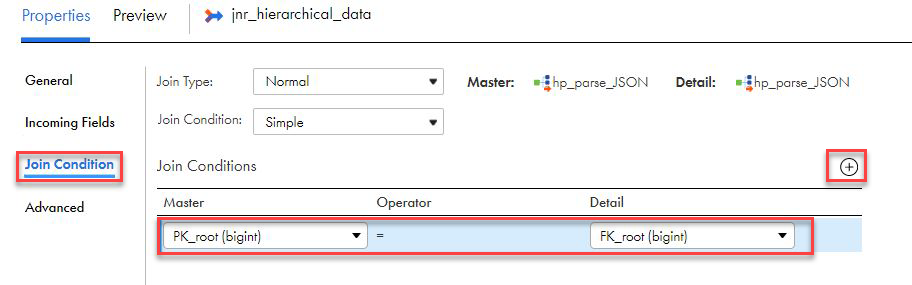
- In Advanced tab, select Sorted Input. 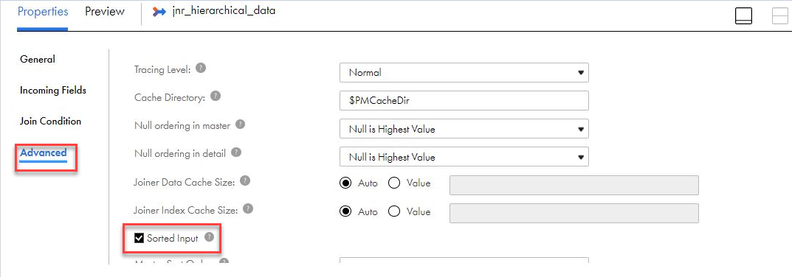
- Click Save to save work in progress.
Step 5
Finally, let's configure the Target.
- Link jnr_hierarchical_data to Target.
- In the General tab, enter tgt_Snowflake_Telco_Info in the Name field.
- In the Incoming Fields tab, change All Fields to Named Fields by clicking on that field.
- Then click Configure to select fields. Select the fields that were created in the jnr_hierarchical_data expression transform. 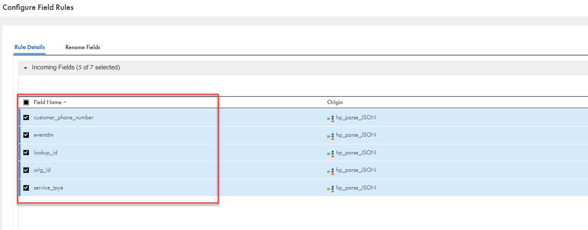
- Go to Rename Fields tab and rename selected fields

- In the Target tab, select Snowflake connection.
- Click Select to select a table.
- In the Target Object window, check Create New at Runtime.
- Enter T_TELCO_INFO in Object Name field.
- Enter TABLE in TableType.
- Enter PC_INFORMATICA_DB/PUBLIC in Path.
- Click OK.


- Click Save.
Step 1
Let's configure a Mapping Task and execute it.
- Click 3 dots to create Mapping task from the mapping
- Select New Mapping Task

- In the New mapping task window, enter mct_parse_json_data in the Name field.
- Select Hands-on Lab for Location.
- Select Informatica Cloud Hosted Agent for Runtime Environment.
- Click Finish.

- Click Run to execute the mapping task.
Step 2
Validate job execution result.
- Click My Jobs to monitor the job execution.
- Click Refresh icon when Updates available message appears.
- When the job is completed, make sure the Status is Success.
- 140 rows were processed.

- In the Snowflake table preview, there are 140 rows as well. Notice that the columns label are in the order as configured in the Expression transform.

Optionally you can load data T_TELCO_INFO into T_TELCO_AGG and review results.
Steps
- Click New
- Click Mappings.
- Select Mapping.
- Click Create.
- Under properties, enter m_add_data_to_aggregate in Name field.
- Ensure Location is Hands-on Lab. If not, click Browse and select it.
- Click the Source transform in the mapping canvas to assign its properties.
- In the General tab, enter src_telco_info in the Name field
- In the Source tab, select snowflake connection and T_TELCO_INFO as Object
- From the transformation palette, drag the Expression transform and drop it over the line between the jnr_sources source target transforms.
- Click align icon to align transformations in the mapping canvas.
- In the General tab, enter exp_add_port in the Name field.
- Go to expression and click + icon on right as an Output Field
- Add the following field o_grpby
- Enter the following in the Expression field SUBSTR(EVENT_DTTM,1,10)
- From the transformation palette, select Aggregator transformation, drag and drop between the exp_add_port and Target in mapping canvas window..
- In the General tab, enter agg_by_date in the Name field.
- In the Group By tab, click the plus icon to add new fields.
- Add the following fields:
o_grpby
MSISDN - In the Aggregate tab, click the plus icon to add a new field.
- Enter o_count in the Name field.
- Select integer in the Type dropdown field.
- Enter 10 in the Precision field.
- Enter 0 in the Scale field.
- Click OK.
- Click Configure to configure the expression.
- Enter count(EVENT_DTTM) in the Expression field. This function will count the number of event types per day per number.
- Click Target to set a target properties.
- In the General tab, enter tgt_agg_snowflake in the Name field.
- select the snowflake connection in the target
- Select Existing for Target Object.
- Select PC_INFORMATICA_DB/PUBLIC/T_TELCO_AGG in Object Name field.

- The Target Fields tab should look like this:

- The Field Mapping tab should look like this:
- Create a mapping task mct_add_data_to_aggregate and run it.
- The mapping task should look like this:

- In Snowflake Snowsight, you should see now 438619 rows in the T_TELCO_AGG table.

Congratulations! You have successfully completed these Labs
In this guide, you learned how to create a free IDMC organization, use Pushdown Optimization/ELT to load and transform mobile traffic and customer loyalty data from S3 files into Snowflake, and how to transform JSON data using Hierarchy Parser transformation. You can utilize your new IDMC org to load data from various data sources into Snowflake and perform data transformations using Data Integration service. With this free IDMC org, you can load 1 billion records per month for free
What we've covered in this guide
- Create an IDMC org via Snowflake Partner Connect
- Review Snowflake connection in IDMC
- Review Snowflake objects created by the registration process
- Configure AWS S3 connection
- Create a Project folder
- Create a data integration mapping to load S3 files into Snowflake
- Configure Pushdown Optimization
- View mapping job result
- Confirm Pushdown Optimization is activated
- View result in Snowflake
- Create JSON schema in Data Integration service
- Use Hierarchy Parser transformation
- Create a data integration mapping to load transform JSON hierarchical data into relational format
- Create a mapping task
- View mapping job result
- View result in Snowflake
Continue learning and check out these guides
Documentation: Informatica Data Integration
Documentation: Snowflake connector
Landing page for Informatica Intelligent Cloud Services Accelerator for Snowflake